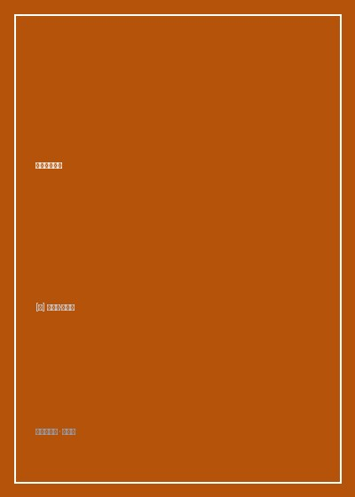

《思考，快与慢》

总体观点
人类大脑的认知运作由两个并存的思维系统主导：系统1（快思考）依赖直觉、自动运转、反应极快且耗能极低，但容易受到刻板印象、情感联想与启发式偏见的操纵；系统2（慢思考）调动注意力、负责深思熟虑、逻辑运算与自我克制，但本质上极其‘懒惰’，常常不假思索地背书系统1给出的直觉假象。许多灾难性判断失误皆源于系统1的越权冲动与系统2的消极怠工。
前景理论（Prospect Theory）摧毁了传统古典经济学的期望效用假说。卡尼曼与特沃斯基通过大量实验证明，人类面临决策时具有三大心理物理学基本特征：参照点依赖（评判得失取决于主观设定的基准线）、损失厌恶（面临同等规模的损失所带来的痛苦，大约是获得同等收益所带来快乐的2至2.5倍），以及敏感度递减（面对大概率盈利时厌恶风险、面对大概率亏损时却转为激进寻求风险）。
人类的记忆体验与真实经历存在不可调和的认知分裂。‘峰终定律（Peak-End Rule）’与‘过程忽视（Duration Neglect）’主宰了‘记忆自我’对一段经历的终极评价：人们在回忆痛苦或快乐时，大脑只提取事件达到最高潮（峰）以及事件即将结束（终）那一瞬间的感受，而对于过程的持续长短几乎视若无睹。理解经验自我与记忆自我的裂痕，是破除决策盲区的哲学钥匙。
核心观点
-
1. 锚定效应与随机数字的隐形牵引
人们在评估未知数值时，会被事先看到的毫无关联的数值（锚点）产生强烈吸引。即使明确告知受试者该数字由幸运轮盘随机摇出，大脑的联想激活机制依然会自动在记忆中搜索与锚点一致的线索。
实验中让法官转动灌了铅的轮盘掷出3或9，紧接着审判一起入室盗窃案：掷出9的法官给出的平均刑期长达8个月，而掷出3的法官平均刑期仅为5个月，司法理性在潜意识锚点面前遭遇沉重打击。 -
2. 可得性偏见与媒体恐惧放大器
人们根据某类事件在大脑中‘回忆提取的容易程度’来评估该事件发生的客观概率。由于恐怖袭击、飞机失事具有极强的戏剧画面感被媒体轮番轰炸，人们对空难的恐惧程度远超死于中风或糖尿病的真实概率。
‘9·11’事件后数月内，数百万人因恐惧飞行改乘长途汽车出行，导致美国高速公路因车祸死亡的人数激增上千人，远超那几架失事客机的遇难人数总和。 -
3. 眼见即为事实（WYSIATI）的盲目自信
系统1擅长根据手头仅有的零散信息拼凑出一个逻辑自洽的故事，并对未被提及的庞大未知证据盲视。一个故事越是情节连贯、细节生动，人们的主观笃定感就越强，尽管其实际预测准确率等同于抛硬币。
面试官在短短十分钟内对一位求职者的谈吐留下极佳印象，便坚信其能胜任一个需要跨部门协调的复杂管理岗位，彻底无视此人过往长期的履历背景盲区。 -
4. 禀赋效应与马克杯的定价鸿沟
一旦一个人拥有了某件物品，他在心理上赋予这件物品的价值就会瞬间倍增。出售这件物品被潜意识视为一种割肉般的‘损失’，而损失厌恶迫使其开出远超市场公允价值的保留价格。
理查德·塞勒的经典实验：随机分给一半学生印有校徽的马克杯，随后组织自由交易，拥有杯子的学生平均索价7美元，而未拥有杯子的买方只愿出价3美元，交易量仅为传统经济学预测的四分之一。 -
5. 峰终定律与冰水浸手实验
大脑中的‘记忆自我’是一个残酷的独裁者，它通过提取峰值与结尾的平均体验来判定整件事的好坏，而完全忽略持续时间的长短。延长痛苦的绝对时长反而可能改善对该痛苦的最终记忆评价。
受试者将手浸入14度冰水60秒（极痛苦），对比浸入14度冰水60秒紧接着在稍微升温至15度的水中多浸泡30秒（共90秒）：大部分受试者在事后选择再次体验90秒的方案，只因其结尾痛苦感受稍有减缓。
全书结构
-
第一部分 系统1与系统2
全书框架基石，详细剖析直觉快系统与理性慢系统的认知分工、注意力资源分配，以及启动效应、联想机制与认知放松的生物学机理。
展示著名的斯特鲁普效应（Stroop Effect）：用红色墨水书写‘绿’字时，大脑因系统1自动识别文字与系统2克制识别颜色的冲突导致反应时间显著延长。 -
第二部分 启发法与偏见
探讨小数定律、锚定效应、可得性启发法与代表性启发法，揭示人类在统计推断、基率忽略（Base-Rate Neglect）上的系统性心智漏洞。
以‘琳达问题’生动演示合取谬误：受试者倾向于认为琳达既是银行出纳又是女权主义者的概率，高于琳达仅仅是一名普通银行出纳的概率。 -
第三部分 过度自信与认知错觉
解构后见之明偏见（事后诸葛亮）、有效性错觉与专业直觉神话，论证在复杂低效度环境下基于简单量化公式的预测远胜顶级专家的主观直觉。
分析华尔街基金经理年年调仓换股的实际业绩，证明其高额管理费换来的超额收益在统计学上几乎完全等同于掷色子的纯随机运气。 -
第四部分 选择与风险：前景理论
系统推导前景理论的数学与心理模型，对比伯努利期望效用理论的致命缺陷，阐释禀赋效应、损失规避与四重风险评估矩阵。
详细拆解四重模式：面对大概率盈利时人们表现为风险厌恶，面对大概率亏损时人们铤而走险寻求风险，解释了彩票热销与股市套牢死扛的共谋机制。 -
第五部分 两个自我：经验自我与记忆自我
剖析日常体验中的幸福感测量，揭开峰终定律、持续时间忽视与聚焦错觉对人生幸福感知、医疗手术与公共政策制定的深远启示。
结肠镜检查临床实验：在检查结束前故意将探针在直肠内多留置数分钟静止不动，患者在几个月后的复查依从率显著提升近三分之一。